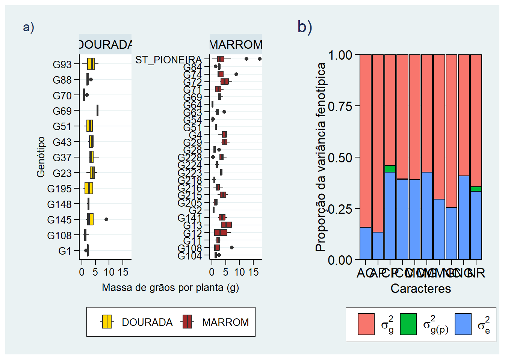
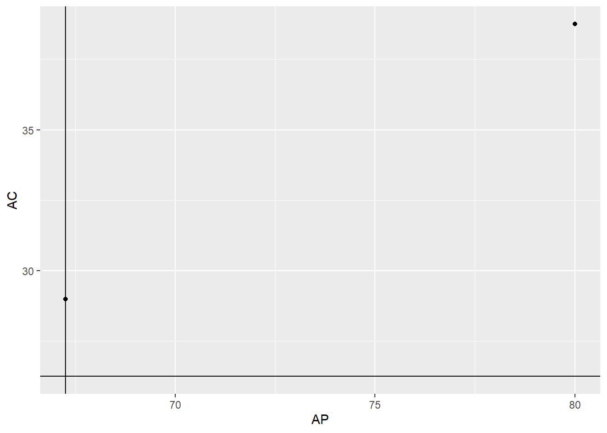
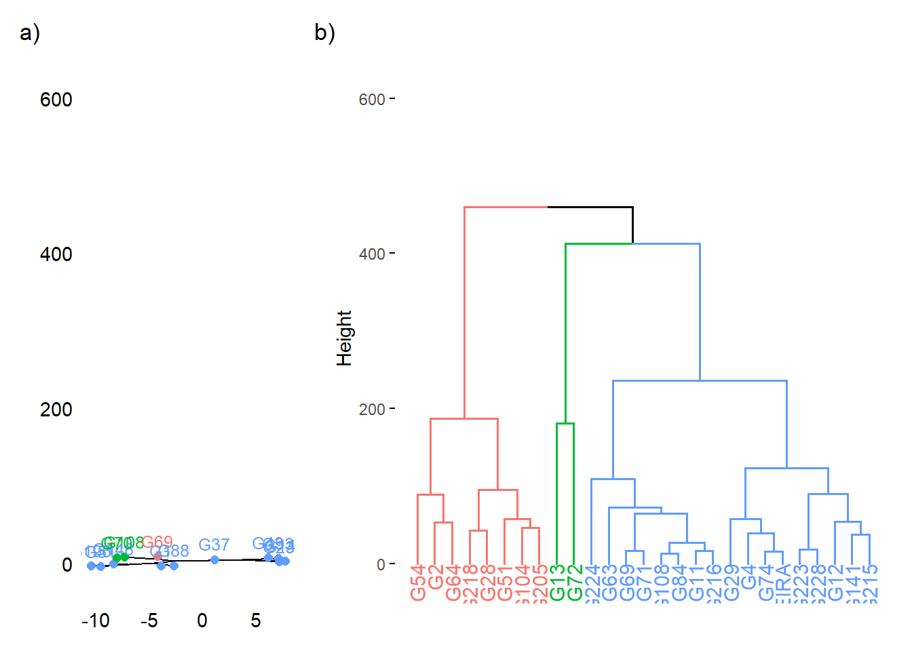

09: Dissimilaridade genética e componentes de variância em genótipos de linho dourado e marrom
1 Pacotes
2 caracterização ambiental
3 Boxplot
df <-
df |>
mutate(GEN = str_remove(GEN, "D|M"))
box <-
ggplot(df, aes(MG, GEN, fill = TIPO)) +
geom_boxplot() +
scale_fill_manual(values = c("gold", "brown")) +
theme_stata() +
theme(axis.text.y = element_text(angle = 0))+
facet_wrap(~TIPO, scales = "free_y") +
labs(x = "Massa de grãos por planta (g)",
y = "Genótipo",
fill = "")4 Variância entre e dentro
4.1 Modelo
vcomp <- function(data, traits, gen_col = "GEN",
plant_col = "PLANTA",
block_col = "BLOCK", check_col = "CHECKS") {
data$GEN_PLANTA <- interaction(data[[gen_col]], data[[plant_col]], drop = TRUE)
resultados <- lapply(traits, function(trait) {
dados_filtrados <- data[!is.na(data[[trait]]), ]
formula_completa <- as.formula(paste(trait, "~ factor(", block_col, ") + (1|", gen_col, ") + (1|GEN_PLANTA)"))
modelo <- lmer(formula_completa, data = dados_filtrados, REML = TRUE)
vc <- as.data.frame(VarCorr(modelo))
var_gen <- vc[vc$grp == gen_col, "vcov"]
var_res <- vc[vc$grp == "Residual", "vcov"]
var_planta <- vc[vc$grp == "GEN_PLANTA", "vcov"]
n <- 4
print(n)
H2 <- var_gen / (var_gen + (var_planta + var_res) / n)
ran <- tryCatch({
ranova(modelo) |> as.data.frame() |> dplyr::select(Chisq = 4, p = 6) |> drop_na()
}, error = function(e) data.frame(Chisq = NA, p = NA))
resultado <- data.frame(
parametro = c("var_gen", "var_planta", "var_res", "n_media", "H2", "LRT", "p_genotipo"),
valor = c(var_gen, var_planta, var_res, n, H2, ran$Chisq[1], ran$p[1])
)
names(resultado)[2] <- trait
return(resultado)
})
# Juntar os resultados por parâmetro
df_final <-
resultados %>%
reduce(full_join, by = "parametro")
return(df_final)
}
variaveis <- c("AP", "AC", "CP", "MC", "MG", "MMG", "ICC", "NR", "NC", "NG")
vals <- vcomp(df, variaveis)
## [1] 4
## [1] 4
## [1] 4
## [1] 4
## [1] 4
## [1] 4
## [1] 4
## [1] 4
## [1] 4
## [1] 4
export(vals, "data/vcomp.xlsx")4.2 Gráficos
df_vcomp <-
vals |>
slice(1:3) |>
pivot_longer(-parametro) |>
mutate(
value = case_when(
parametro == "var_planta" ~ value / 5,
parametro == "var_res" ~ value / 5,
TRUE ~value
)
)
vcmp <-
ggplot(df_vcomp, aes(name, value))+
geom_col(aes(fill = parametro), position = "fill",
color = "black") +
theme_stata(base_size = 14) +
scale_y_continuous(expand = expansion(0)) +
scale_x_discrete(expand = expansion(0)) +
theme(axis.text.y = element_text(angle = 0)) +
scale_fill_manual(
values = c("var_gen" = "#F8766D", "var_planta" = "#00BA38", "var_res" = "#619CFF"),
labels = c(
"var_gen" = expression(sigma[g]^2),
"var_planta" = expression(sigma[g(p)]^2),
"var_res" = expression(sigma[e]^2)
)
) +
labs(x = "Caracteres",
y = "Proporção da variância fenotípica",
fill = "")
box + vcmp +
plot_layout(widths = c(0.6, 0.4)) +
plot_annotation(tag_levels = "a",
tag_suffix = ")")
# ggsave("figs/boxplot_vcomp.jpg",
# width = 15,
# height = 6)4.3 Distancia e Agrupamento
dfmedias <-
df |>
group_by(TIPO, GEN) |>
summarise(across(AP:ICC, \(x){mean(x, na.rm = TRUE)}),
.groups = "drop")
dfdist <-
dfmedias |>
slice(1:2) |>
select(GEN, AP:ICC)
ggplot(dfdist, aes(AP, AC)) +
geom_point() +
geom_hline(yintercept = 26.25) +
geom_vline(xintercept = 67.25)
# a2 = b2 + c2
# a^2 = 100
# a = raiz(100)
mat <- dfdist |> column_to_rownames("GEN") |> as.matrix()
mat[1, 1] <- 107
# DISTANCIA DO G1 PARA G104 considerando AP e AC
sqrt(sum((mat[1, ] - mat[2, ])^2))
## [1] 136.43365 Distância euclidiana
5.1 Dourada
mat <-
dfmedias |>
group_by(TIPO) |>
nest()
matd <- mat$data[[1]] |> column_to_rownames("GEN")
ddourada <- clustering(matd)
dend_dourada <-
fviz_dend(ddourada$hc,
main = "",
type = "phylogenic",
k = 3) +
ylim(-20, 600)5.2 Marrom
matm <- mat$data[[2]] |> column_to_rownames("GEN")
marrom <- clustering(matm)
dend_marrom <-
fviz_dend(marrom$hc,
main = "",
k = 3) +
ylim(-20, 600)
dend_dourada + dend_marrom +
plot_layout(widths = c(0.3, 0.7)) +
plot_annotation(tag_levels = "a",
tag_suffix = ")")
# ggsave(
# "figs/dendrograma.jpg",
# width = 10,
# height = 5
# )6 Section info
sessionInfo()
## R version 4.4.2 (2024-10-31 ucrt)
## Platform: x86_64-w64-mingw32/x64
## Running under: Windows 11 x64 (build 26100)
##
## Matrix products: default
##
##
## locale:
## [1] LC_COLLATE=Portuguese_Brazil.utf8 LC_CTYPE=Portuguese_Brazil.utf8
## [3] LC_MONETARY=Portuguese_Brazil.utf8 LC_NUMERIC=C
## [5] LC_TIME=Portuguese_Brazil.utf8
##
## time zone: America/Sao_Paulo
## tzcode source: internal
##
## attached base packages:
## [1] stats graphics grDevices utils datasets methods base
##
## other attached packages:
## [1] patchwork_1.3.0 lmerTest_3.1-3 lme4_1.1-36 Matrix_1.7-1
## [5] factoextra_1.0.7 ggthemes_5.1.0 metan_1.19.0 lubridate_1.9.4
## [9] forcats_1.0.0 stringr_1.5.1 dplyr_1.1.4 purrr_1.0.2
## [13] readr_2.1.5 tidyr_1.3.1 tibble_3.2.1 ggplot2_3.5.1
## [17] tidyverse_2.0.0 rio_1.2.3
##
## loaded via a namespace (and not attached):
## [1] writexl_1.5.1 tidyselect_1.2.1 viridisLite_0.4.2
## [4] farver_2.1.2 viridis_0.6.5 R.utils_2.12.3
## [7] fastmap_1.2.0 GGally_2.2.1 tweenr_2.0.3
## [10] mathjaxr_1.6-0 digest_0.6.37 timechange_0.3.0
## [13] lifecycle_1.0.4 magrittr_2.0.3 compiler_4.4.2
## [16] rlang_1.1.5 tools_4.4.2 igraph_2.1.4
## [19] yaml_2.3.10 knitr_1.49 ggsignif_0.6.4
## [22] labeling_0.4.3 htmlwidgets_1.6.4 plyr_1.8.9
## [25] RColorBrewer_1.1-3 abind_1.4-8 withr_3.0.2
## [28] numDeriv_2016.8-1.1 R.oo_1.27.0 grid_4.4.2
## [31] polyclip_1.10-7 ggpubr_0.6.0 colorspace_2.1-1
## [34] scales_1.3.0 MASS_7.3-61 cli_3.6.4
## [37] rmarkdown_2.29 reformulas_0.4.0 generics_0.1.3
## [40] rstudioapi_0.17.1 tzdb_0.5.0 readxl_1.4.3
## [43] minqa_1.2.8 ggforce_0.4.2 splines_4.4.2
## [46] cellranger_1.1.0 vctrs_0.6.5 boot_1.3-31
## [49] carData_3.0-5 jsonlite_1.9.1 car_3.1-3
## [52] hms_1.1.3 rstatix_0.7.2 ggrepel_0.9.6
## [55] Formula_1.2-5 dendextend_1.19.0 glue_1.8.0
## [58] nloptr_2.1.1 ggstats_0.8.0 stringi_1.8.4
## [61] gtable_0.3.6 munsell_0.5.1 pillar_1.10.1
## [64] htmltools_0.5.8.1 R6_2.6.1 Rdpack_2.6.2
## [67] evaluate_1.0.3 lattice_0.22-6 backports_1.5.0
## [70] rbibutils_2.3 R.methodsS3_1.8.2 broom_1.0.7
## [73] Rcpp_1.0.14 gridExtra_2.3 nlme_3.1-166
## [76] xfun_0.50 pkgconfig_2.0.3